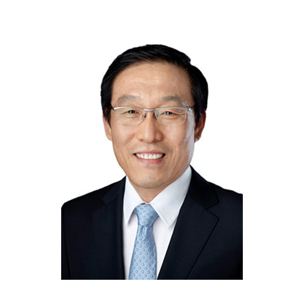
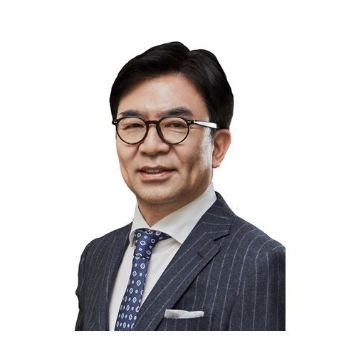
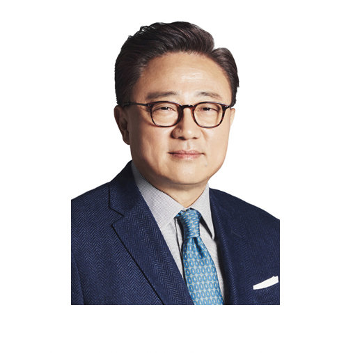

Samsung — южнокорейская группа компаний, один из крупнейших финансово-промышленных групп в Южной Корее. На мировом рынке известен как производитель очень сложных технологий, часто включающие в себя электронику и робототехнику, используемые в производстве и других процессах. Включая полноцикловое производство интегральных микросхем, телекоммуникационного оборудования, бытовой техники, аудио- и видеоустройств. Главный офис компании расположен в столице Республики Корея - Сувоне.
Компания Samsung Group основана в 1938 году. Samsung стала первой компанией в мире, которая изобрела 50-нанометровую флеш-память типа NAND ёмкостью 16 GB в 2005 году. В 2006, компания Samsung стала официальным спонсором Паралимпийских игр и стала №1 по доле глобального рынка телевизоров. В 2010 году Samsung запустила производство смартфонов серии GALAXY с OC Android, в этом же году официально становится глобальной компанией №1 по продаже электроники. Уже в 2012 году Samsung заняла 9-е место среди 100 ведущих брендов. 2015 год: Начало серийного производства первых в отрасли 12-гигабитных чипов мобильной DRAM-памяти LPDDR4. Запуск мобильного платежного сервиса Samsung Pay. В 2017 компания Samsung Начала массовое производствл процессоров на основе операционной технологии 10nm FinFET второго поколения и расширение портфолио в области передовой микроэлектроники за счет новых процессоров 11nm LPP и 7nm LPP на основе технологии EUV.
Samsung следует простой философии бизнеса: использовать человеческие и технологические ресурсы компании для создания товаров и услуг превосходящего качества, осуществляя тем самым свой вклад в улучшение состояния общества во всем мире. Именно поэтому Samsung придает очень большое значение персоналу и технологиям.
Адрес: Новинский бульвар, 31, Москва. Проспект Аль-Фараби здание 36, блок Б, 3 этаж., Алматы. 56 Seongchon-gil, Yangjae 1(il)-dong, Seocho-gu, Seoul. -dong,, 1320-26 Seocho 2(i)-dong, Seocho-gu, Seoul. South Korea, Seoul, Seocho-gu, Seocho 2(i)-dong, 11 Seocho-daero 74-gil. 1301 E Lookout Dr, Richardson, TX 75082. 85 Challenger Rd, Ridgefield Park, NJ 07660.


